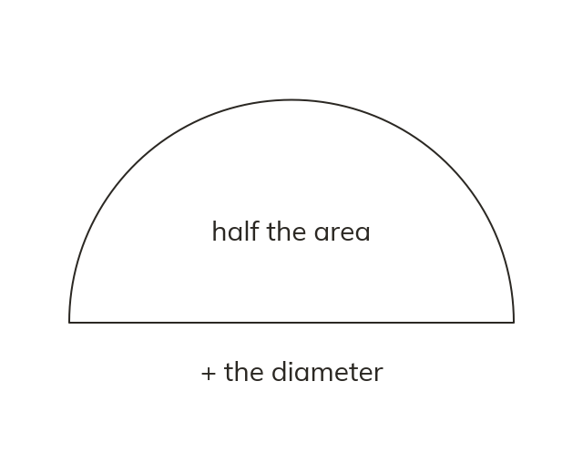

Areas halve, perimeters do not
A semicircle's area is half the circle's area. Its perimeter is not half the circumference. Its straight edge must be added on.
A semicircle is exactly half a circle, and a quarter circle exactly a quarter, so their areas are simply the whole circle's area halved or quartered. Their perimeters are NOT a simple fraction of the circumference, though, because a semicircle or quarter circle also has straight edges that a full circle doesn't have - these must be added on.